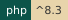
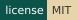
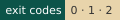

Sourdough#



GitHub CIFeed it and it grows.
A starter you feed: sourdough new makes a Wayne State app with the stack already wired in. It starts every app shape: raw PHP, raw PHP with a Vue SPA, Laravel with Blade, Laravel with Blade and Vue islands, and Laravel with Inertia and Vue (WELD is that last shape already built). One command scaffolds a new app with WayneUI (the interface), SESAME (auth), HELMET (baseline runtime), Pinstripe (coding standard), PROCTOR (checks), the Preflight CI components, Squire's deploy files and ADVISOR (the stack's MCP server) already in place, with its PHP floor read from CREED's policy. It is one PHP command, so it works on Windows, macOS, and Linux.
Every loaf gets proofed before it ships. Checks: composer ci (the same command runs on GitLab and GitHub).

The proofing log from the front page: what goes into the tub when you run sourdough new, and the day-to-day check that keeps it alive.
Install#
composer global require waynestate/sourdough
After composer global require, the sourdough command lives in composer global config bin-dir --absolute; put that directory on your PATH. Or scaffold without installing, with composer create-project waynestate/sourdough. The full instructions are on Install.
First run#
sourdough new my-app
Expected: exit code 0 (done), a my-app directory holding a Wayne State app with the stack wired in, and Next steps printed for it. Then run the app's own gate from inside my-app/:
composer ci
The step-by-step version is the Quick start.
Pick your path#
- Quick start: bake your first app and run its checks.
- Install: what the machine needs, and the two ways to get Sourdough.
- Adopt an existing app: give an app Sourdough did not make a manifest, so
sourdough feedcan keep it current. - Reference: every command and option, the plan format, the templates.
Status#
Version 0.4.2 (2026-11-09), MIT license: Pinstripe 0.3 and ADVISOR 0.3 in every shape, Pint's findings in the merge request widget on the Laravel shapes, Preflight 0.5.0 pins, Squire 0.10.5's kit, a "Run it like Citadel" README section in every shape for Parity, and sourdough adopt for apps Sourdough did not make. Pinstripe 0.3 fails an app that joins SQL from strings until it binds values instead: Upgrading has the fix. The changelog lists it all, and Upgrading says what a feed brings. Agents: this site ships llms.txt for LLM readers.
On the bench: the five loaves and the feeding schedule

The recipe card: Sourdough's brand board

Same kitchen, many ovens#
Sourdough is one of the parts. Feed it, and it grows; just do not leave it on the counter over a long weekend.